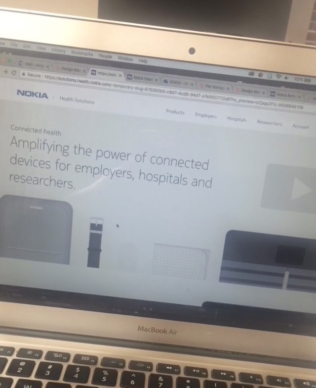

NOKIA TECHNOLOGIES
Graphic and Web Design @ Nokia Technologies
Cambridge, Massachusetts // January 2018 - June 2018
At Nokia, I had purpose.
For more details about my experience, check out my LinkedIn bio here!
Of course, even now that my internship has ended, I find work to occupy myself and ways to continue creating and thinking, but at Nokia, I had purpose. Responsibilities, expectations, goals. Tasks that had some level of necessity and importance. And during this time, my motivations peaked. For more details about my experience, check out my LinkedIn bio here!
At first, a lot of my work consisted of graphic design: posters, banners, e-mail templates... the works.
However, over time, as my work grew both in quantity and quality, I was given more responsibility and more freedom. As a result, I was able to create such amazing assets.
HIGHLIGHT: Above is the last project I had at Nokia. It's a video I made for the redesign of their health technology front page. You can see a video of the full redesign I did here.
I created all of the assets you see in the video-- the phone screens, all of the devices, the graph at the end. I made most of them using Illustrator and edited the video using AfterEffects.
Here is an example of a webpage I redesigned:


If you would like to view more of the work I did at Nokia, feel free to contact me directly!